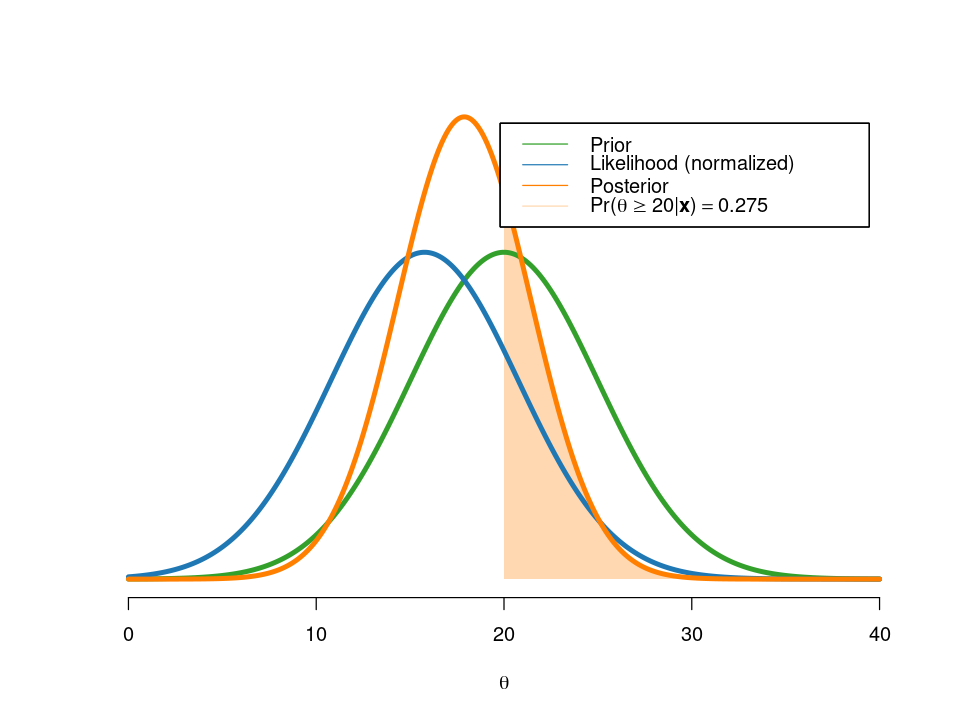
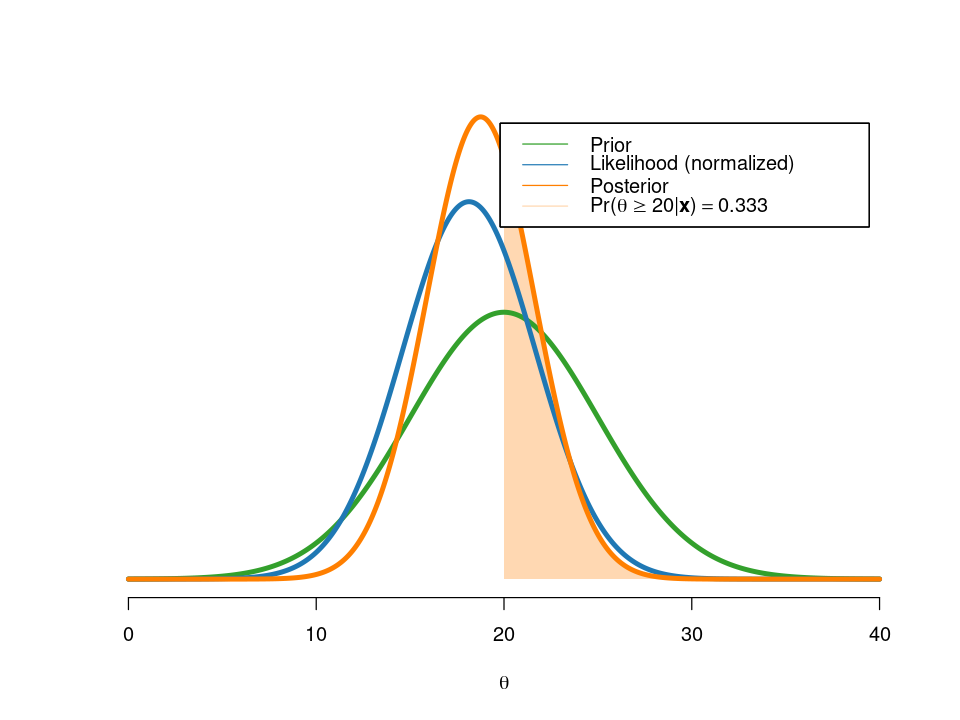
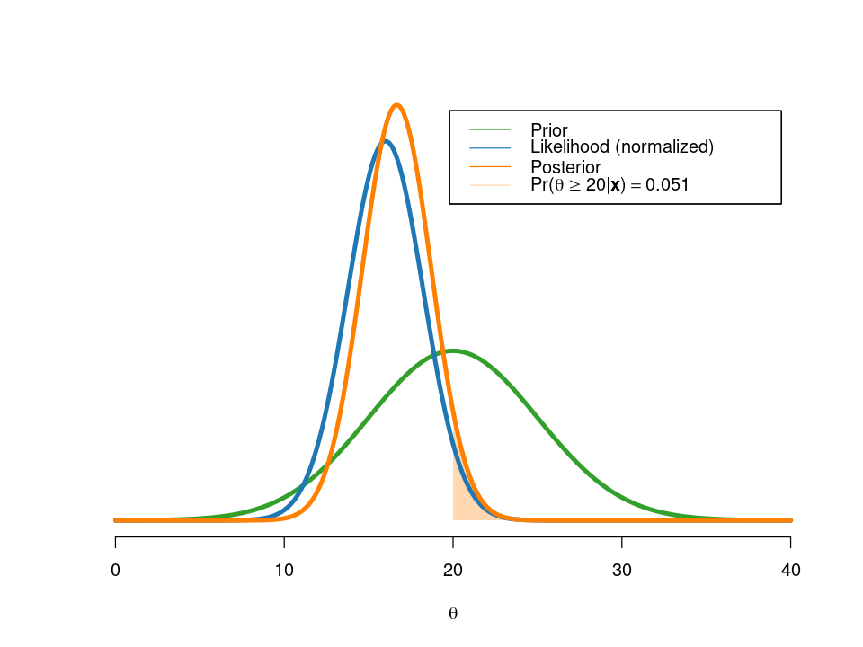

options(repr.plot.width=8, repr.plot.height=6, lwd = 4)
library("RColorBrewer") # for pretty colors
library("tidyverse") # for string interpolation to print variables in plots.
library("latex2exp") # the TeX() function makes it possible to print latex math
colors = brewer.pal(12, "Paired")[c(1,2,7,8,3,4,5,6,9,10)];Analyzing internet download speeds with a Gaussian model
a notebook for the book Bayesian Learning by Mattias Villani
Problem
The maximum internet connection speed downstream in my home is 50 Mbit/sec. This maximum will typically never be reached, but my internet service provider (ISP) claims that the average speed is at least 20Mbit/sec. I want to collect some data to investigate this.
Getting started
First, some housekeeping: loading libraries and setting up colors.
Data
I collect a total of five measurements over the course of five consecutive using an speed testing internet service:
x = c(15.77, 20.5, 8.26, 14.37, 21.09)Model
The measurements are assumed to be \[x_1,\ldots,x_n \overset{\mathrm{iid}}{\sim} \mathrm{N}(\theta,\sigma^2),\] where \(\theta\) is the average speed; we ignore for simplicity that the measurements cannot be negative.
The measurements are reported to have a standard deviation of \(\sigma=5\) by speed testing service and we take this as the given \(\sigma\).
sigma2 = 5^2Prior
I will use a prior centered on the average claimed by the ISP, \(\mu_0=20\), with a prior standard deviation of \(\tau_0=5\). My prior beliefs are therefore that \(\theta \in [10,30]\) with approximately \(95\%\) probability.
mu_0 = 20
tau2_0 = 5^2Posterior
A normal prior for a normal model gives us a posterior which is also normal:
\[ \theta | \mathbf{x} \sim \mathrm{N}(\mu_n,\tau_n^2), \] where the posterior precision (1/variance) is the sum of the data precision and the prior precision \[ \frac{1}{\tau_n^2} = \frac{n}{\sigma^2} + \frac{1}{\tau_0^2} \] and the posterior mean is a weighted average of the sample mean and the prior mean \[ \mu_n = w \bar x + (1-w)\mu_0\] where the weight is the relative precision of the data and prior information \[ w = \frac{n/\sigma^2}{n/\sigma^2 + 1/\tau_0^2}\]
Let’s write a small function that computes the posterior mean and variance, and plots the prior, likelihood and posterior.
postGaussianIID <- function(x, mu_0, tau2_0, sigma2, thetaGrid, areaPoint){
# compute posterior mean and variance
n = length(x)
tau2_n = 1/(n/sigma2 + 1/tau2_0)
w = (n/sigma2)/(n/sigma2 + 1/tau2_0)
mu_n = w*mean(x) + (1-w)*mu_0
# plot PDFs. Likelihood is normalized.
priorPDF = dnorm(thetaGrid, mean = mu_0, sd = sqrt(tau2_0))
postPDF = dnorm(thetaGrid, mean = mu_n, sd = sqrt(tau2_n))
postProbAbovePoint = 1-pnorm(areaPoint, mean = mu_n, sd = sqrt(tau2_n))
normLikePDF = dnorm(thetaGrid, mean = mean(x[1:n]), sd = sqrt(sigma2/n))
plot(1, type="n", axes=FALSE, xlab = expression(theta), ylab = "",
xlim=c(min(thetaGrid),max(thetaGrid)),
ylim = c(0,max(priorPDF,postPDF,normLikePDF)))
axis(side = 1)
polygon(c(thetaGrid[thetaGrid>=areaPoint], max(thetaGrid), areaPoint),
c(postPDF[thetaGrid>=areaPoint], 0, 0),
col=adjustcolor(colors[4],alpha.f=0.3), border=NA)
lines(thetaGrid, priorPDF, type = "l", lwd = 4, col = colors[6])
lines(thetaGrid, normLikePDF, lwd = 4, col = colors[2])
lines(thetaGrid, postPDF, lwd = 4, col = colors[4])
legend(x = "topright", inset=.05, cex = c(1,1,1,1),
legend = c("Prior", "Likelihood (normalized)", "Posterior",
TeX(sprintf("$Pr(\\theta \\geq %2.0f | \\mathbf{x}) = %0.3f$", areaPoint, postProbAbovePoint))),
lty = c(1, 1, 1, 1), pt.lwd = c(3, 3, 3, 3),
col = c(colors[6], colors[2], colors[4], adjustcolor(colors[4],alpha.f=0.3)))
cat("Posterior mean is ", round(mu_n,3), "\n")
cat("Posterior standard deviation is ", round(sqrt(tau2_n),3), "\n")
cat("The weight on the sample mean is ", round(w,3))
return(list("mu_n" = mu_n, "tau2_n" = tau2_n, "w" = w))
}Let us start by analyzing just the first observation \(x_1=15.77\) using this function.
thetaGrid = seq(0, 40, length = 1000) # Some suitable grid of values to plot over
areaPoint = 20 # shade the region where theta>= areaPoint (20 in my example)
n = 1
post = postGaussianIID(x[1:n], mu_0, tau2_0, sigma2, thetaGrid, areaPoint)Posterior mean is 17.885
Posterior standard deviation is 3.536
The weight on the sample mean is 0.5
We see that the prior and data information happen to get the same weight (w) in the posterior. That is a coincidence from the fact that the prior variance \(\tau_0^2\) is the same as the data variance \(\sigma^2\).
Moving on, let’s add the next measurement to the analysis:
n = 2
post = postGaussianIID(x[1:n], mu_0, tau2_0, sigma2, thetaGrid, areaPoint)Posterior mean is 18.757
Posterior standard deviation is 2.887
The weight on the sample mean is 0.667
We now see that the posterior is more affected by the data information than the prior information (w = 0.666).
Finally, adding all \(n=5\) data points gives:
n = 5
post = postGaussianIID(x[1:n], mu_0, tau2_0, sigma2, thetaGrid, areaPoint)Posterior mean is 16.665
Posterior standard deviation is 2.041
The weight on the sample mean is 0.833
I am now rather sure that my average download speed is less than 20 MBit/sec since the posterior probability of \(\theta\geq20\) is only \(0.051\).